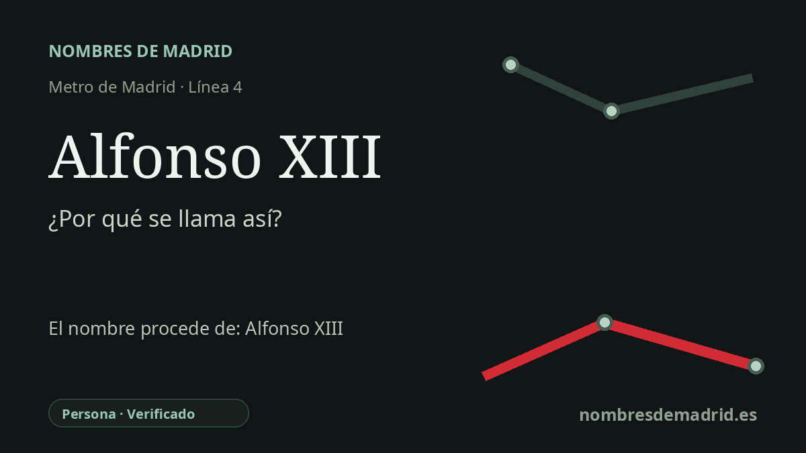

Publicado el · Investigación de Nombres de Madrid · Cómo verificamos cada origen · 7 fuentes consultadas
Respuesta rápida
La estación Alfonso XIII toma su nombre de la cercana avenida de Alfonso XIII y, en último término, del rey Alfonso XIII de España, el monarca que inauguró la primera línea del Metro de Madrid en 1919. La estación de la línea 4 se abrió mucho después, en 1973, dentro de la prolongación Diego de León-Alfonso XIII.
La historia del nombre
El nombre de la estación Alfonso XIII procede de la cercana avenida de Alfonso XIII y, en último término, homenajea a Alfonso XIII, rey de España desde su nacimiento en 1886 hasta la proclamación de la Segunda República en 1931. La estación está en la línea 4, en el entorno de Prosperidad y Ciudad Jardín, dentro de Chamartín, junto a López de Hoyos, Clara del Rey y la avenida que conserva el nombre del monarca.
Alfonso XIII tiene una relación especial con el Metro de Madrid más allá del callejero. La compañía original fue conocida como Metropolitano Alfonso XIII, y las fuentes oficiales de la Comunidad de Madrid señalan que el rey inauguró la primera línea el 17 de octubre de 1919. Aquel primer trayecto unía Puerta del Sol con Cuatro Caminos, medía 3,48 km y contaba con seis paradas intermedias, es decir, ocho estaciones en total.
El papel del rey no fue solo ceremonial. El material archivístico del centenario publicado por la Comunidad de Madrid indica que Alfonso XIII aportó personalmente un millón de pesetas para dar confianza al proyecto, mientras que el Banco de Vizcaya aportó cuatro millones para una obra inicial presupuestada en ocho millones. Por eso el nombre de la estación enlaza la memoria monárquica con la historia del transporte madrileño, aunque la parada actual pertenezca a una ampliación posterior.
La estación de la línea 4 se inauguró el 26 de marzo de 1973, cuando el Metro prolongó la línea desde Diego de León hasta Alfonso XIII pasando por Avenida de América y Prosperidad. Un extracto de la memoria de Metro de Madrid conservado por Memoria de Madrid describe el nuevo tramo como una prolongación de 2.544 metros y enumera sus tres estaciones: Avenida de América, Prosperidad y Alfonso XIII.
La identificación con el rey Alfonso XIII está bien respaldada, pero esta estación no formó parte de la línea inaugural de 1919. Los célebres 40 segundos corresponden al trayecto Cuatro Caminos-Ríos Rosas, no al viaje inaugural completo.